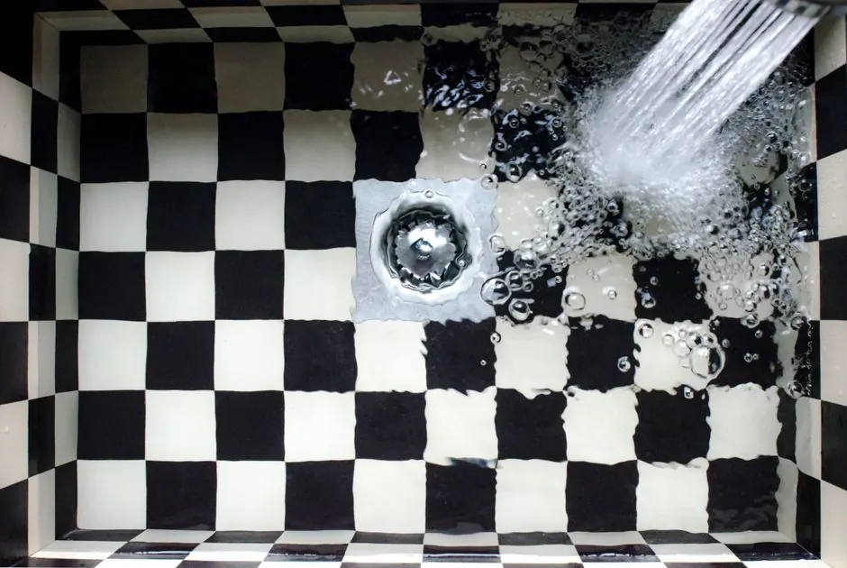
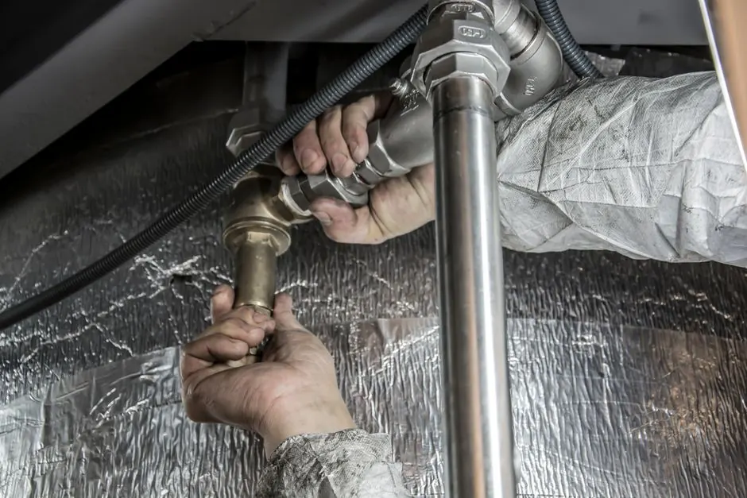

Drain Cleaning in Old Naples
Preserve historic cottages, custom coastal estates, and avenue restaurants with drain cleaning in Old Naples. Vintage cast iron lines and banyan tree roots near 5th Avenue South and 3rd Street South require cabling and camera inspections. To see all our services, explore our drain cleaning in Naples, FL page.
Clear arrival timeUpfront optionsInspected first
Navigating the Historic Plumbing Systems of Old Naples
Old Naples features a beloved architectural mix ranging from 1950s coastal cottages to modern architectural masterpieces. Older properties often rely on original cast iron or vitrified clay sewer laterals that have developed internal scaling, rust blisters, or tree root penetrations from iconic mahogany, palm, and banyan trees.
Our Naples Drain Pros team uses sewer camera inspection to pinpoint line defects accurately, followed by targeted drain cabling or hydro jetting to restore maximum line diameter without risking pipe collapse.
See available Old Naples drain services
How we workWe protect your floors and work area during every service call, executing clean, thorough diagnoses before touching any pipe.
Drain Services in Old Naples
Protect your home from backups and plumbing slowdowns with our proven clearing techniques.
01
Sewer Root Clearing and Jetting
Remove aggressive roots and sediment from main sewer lines running from your home out toward city sewer mains.
02Bathroom and Shower Drain Clearing
Clear hair, soap scum, and mineral scale from guest baths, master showers, and powder room sink drains.
03Kitchen Sink and Disposal Clearing
Eliminate dense grease and food buildup causing slow sinks and unpleasant disposal odors.
045th Ave and 3rd St Commercial Drains
Drainage solutions for Old Naples restaurants, cafes, boutiques, and rental properties.
Common Drain Problems in Old Naples
We understand the specific environmental and structural variables affecting homes within the Old Naples grid.
Mature Tree Root Infiltration
Banyan and palm tree roots seek out pipe joints, causing heavy blockages. How we help: We deploy root cutting blades and hydro jetting heads that slice roots clean at the entry point.
Aging Cast Iron Pipe Flaking
Rust and corrosion inside vintage cast iron pipes catch debris. How we help: Our pipe blockage clearing restores smooth water travel and checks line structural integrity.
High Seasonal Usage Burdens
Seasonal occupancy in winter months places sudden peak demand on home sewer lines. How we help: Preventative line jetting stops backups during family visits and guest arrivals.
When to Call for Old Naples Drain Service
Do not wait until water spills over fixtures. Watch for these telltale indicators:
Toilets Bubbling When Sinks Drain
Air forced backward through the toilet indicates a blockage in the primary sewer line downstream.
Water Pooling Around Floor Cleanouts
Effluent seeping near outside cleanouts is a certain sign of a main line blockage needing immediate snaking.
Persistent Sewer Odors
Gases escaping through bathroom drains point to dried traps, venting issues, or deep line clogs.
Slow Kitchen Sink Discharge
Water standing in the basin while running the dishwasher indicates an accumulation of cooking grease.
Servicing Old Naples Landmark Neighborhoods
From the avenues down to the Gulf shore, our technicians are continually active in the neighborhood.
5th Avenue South District
We provide scheduled and urgent commercial and residential drain clearing near 5th Ave South.
3rd Street South Shopping Area
Serving local businesses, historic homes, and townhomes with discrete, prompt plumbing support.
Naples Pier and 12th Avenue South
Handling coastal beach cottages and waterfront estates steps from the beach.
Cambier Park and Broad Avenue
Providing prompt drain maintenance for neighborhood residences and nearby community buildings.
Serving All Old Naples Avenues and Streets
We cover all residential avenues from 7th Avenue North to 14th Avenue South and Gulf Shore Boulevard to Goodlette-Frank Road.
Neighboring Service Areas: Port Royal | Park Shore and The Moorings | Coquina Sands | Lake Park
Verify My Address →
1234
Primary Old Naples Dispatch ZoneDirect access for drain snaking and sewer clearing.
Old Naples Drain FAQ
Our dispatch team is ready to answer questions regarding your property's specific piping system.
Call +1 (239) 688 0557Why are tree roots such a frequent issue in Old Naples sewer lines?
Old Naples is famed for mature banyans, royal palms, and live oaks. Their vigorous root systems seek moisture through minute joints in underground sewer pipes, causing severe obstructions.
Can you safely clean vintage cast iron pipes in historic Old Naples cottages?
Yes. We perform video camera inspections first and employ descaling and mechanical cabling to safely remove buildup without cracking vintage pipes.
Do you clear drains for 5th Avenue and 3rd Street South businesses?
Yes, we clear commercial and residential drains across the entire Old Naples dining and shopping district.
How much does drain clearing cost in Old Naples?
Sewer and drain clearing costs depend on line length, cleanout access, and the blockage type. We inspect the line and confirm the price before work starts.
What steps should I take if sewage starts backing up into my home?
Turn off your main water valve, avoid running faucets or flushing toilets, and call our dispatch line. We tell you what to do while you wait.
Need Drain Service in Old Naples?
Call us and tell us which drain is blocked. We will tell you the next open time and what to do while you wait.

Schedule Old Naples Drain Service
Call or email us about a clogged drain or a sewer backup. We reply as soon as we can.